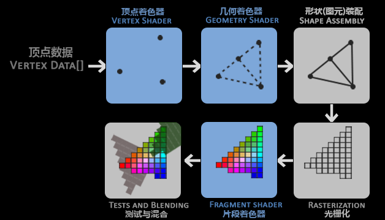
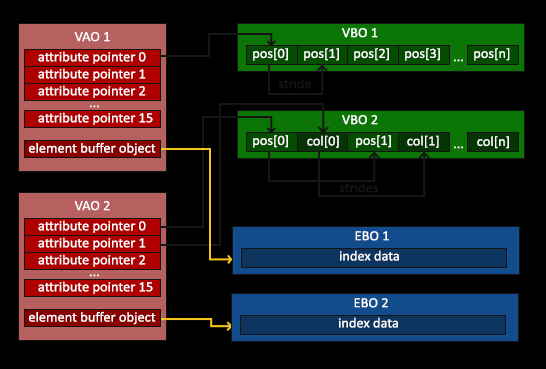

3.关于OpenGL
一般认为OpenGL是API(Application Programming Interface, 应用程序编程接口)，包含了一系列可以操作图形、图像的函数。实际，OpenGL本身是一个由Khronos组织制定并维护的规范(Specification)。所有版本的OpenGL规范文档都被公开的寄存在Khronos那里。
早期的OpenGL使用立即渲染模式（Immediate mode，也就是固定渲染管线），这个模式下绘制图形很方便，但控制和使用不够灵活自由，同时效率较低。
从OpenGL3.2开始，规范文档开始废弃立即渲染模式，并鼓励开发者在OpenGL的核心模式(Core-profile)下进行开发，这个分支的规范完全移除了旧的特性。现代函数要求使用者真正理解OpenGL和图形编程，它有一些难度，然而提供了更多的灵活性，更高的效率，更重要的是可以更深入的理解图形编程。
OpenGL自身是一个巨大的状态机(State Machine)，一系列变量控制的状态构成OpenGL上下文(Context)，当前OpenGL上下文控制如何进行渲染。
OpenGL库是用C语言写的，同时也支持多种语言的派生，但其内核仍是一个C库。由于C的一些语言结构不易被翻译到其它的高级语言，因此OpenGL开发的时候引入了一些抽象层。“对象(Object)”就是其中一个。
3.1.渲染管线
经过渲染管线的处理，可将3D空间中的元素转换为可用于屏幕渲染的2D像素组。图形渲染管线可以被划分为两个主要部分：第一部分把你的3D坐标转换为2D坐标，第二部分是把2D坐标转变为实际的有颜色的像素。
渲染管线的运行依托于每个阶段对应的“着色器”，这些着色器运行于GPU上，可基于GPU成千上万的处理核心快速的运行，处理数据。
OpenGL着色器是用OpenGL着色器语言(OpenGL Shading Language, GLSL)写成的。

- 顶点着色器(Vertex Shader)
对输入的顶点进行处理，把3D坐标转为投影于观察方向的3D坐标（
裁剪坐标），同时顶点着色器允许我们对顶点属性进行一些基本处理，如Normal、UV等。
#version 450 core
layout (location = 0) in vec3 aPos;
layout (location = 1) in vec3 aNormal;
//在片段着色器中与光源方位结合，构造片段对应的“漫反射”（diffuse）数据
out vec3 FragPos;
out vec3 Normal;
uniform mat4 model;
uniform mat4 view;
uniform mat4 projection;
void main()
{
FragPos = vec3(model * vec4(aPos, 1.0));
Normal = vec3(model * vec4(aNormal, 0.0));
gl_Position = projection * view * model * vec4(aPos, 1.0);
}
-
几何着色器(Geometry Shader) 将一组顶点作为输入，这些顶点形成图元，并且能够通过发出新的顶点来形成新的(或其他)图元来生成其他形状。
-
图元装配(Primitive Assembly)阶段 将顶点着色器（或几何着色器）输出的所有顶点作为输入（如果是GL_POINTS，那么就是一个顶点），并将所有的点装配成指定图元的形状
-
光栅化阶段(Rasterization Stage) 这里它会把图元映射为最终屏幕上相应的像素，生成供片段着色器(Fragment Shader)使用的片段(Fragment)。在片段着色器运行之前会执行裁切(Clipping)
-
片段着色器(Fragment Shader) 主要目的是计算一个像素的最终颜色，这也是所有OpenGL高级效果产生的地方。通常，片段着色器包含3D场景的数据（比如光照、阴影、光的颜色等等），这些数据可以被用来计算最终像素的颜色。
#version 450 core
out vec4 FragColor;
in vec3 Normal;
in vec3 FragPos;
uniform vec3 lightPos;
uniform vec3 lightColor;
uniform vec4 objectColor;
void main()
{
// ambient
float ambientStrength = 0.3;
vec3 ambient = ambientStrength * lightColor;
// diffuse
vec3 norm = normalize(Normal);
vec3 lightDir = normalize(lightPos - FragPos);
float diff = max(dot(norm, lightDir), 0.0);
vec3 diffuse = diff * lightColor;
vec3 result = (ambient + diffuse) * objectColor.rgb;
FragColor = vec4(result, objectColor.a);
}
- Alpha测试和混合(Blending)阶段 这个阶段检测片段的对应的深度（和模板(Stencil)）值（后面会讲），用它们来判断这个像素是其它物体的前面还是后面，决定是否应该丢弃。这个阶段也会检查alpha值（alpha值定义了一个物体的透明度）并对物体进行混合(Blend)。所以，即使在片段着色器中计算出来了一个像素输出的颜色，在渲染多个三角形的时候最后的像素颜色也可能完全不同。
图形渲染管线非常复杂，它包含很多可配置的部分。然而，对于大多数场合，我们只需要配置顶点和片段着色器就行了。几何着色器是可选的，通常使用它默认的着色器就行了。
3.2.数据与渲染的桥梁
我们怎么样把数据传递给渲染管线呢？可以通过构建和配置VAO、VBO、EBO的方式，将数据以一定的结构和意义进行绑定和解释，这样在渲染管线中可以很方便的去使用和渲染绘制。
VAO、VBO、EBO可以称之为数据与渲染的桥梁，构建和配置的过程也即桥梁搭建。
- 顶点数组对象：
Vertex Array Object，VAO； - 顶点缓冲对象：
Vertex Buffer Object，VBO； - 元素缓冲对象：
Element Buffer Object，EBO或 索引缓冲对象Index Buffer Object，IBO。
